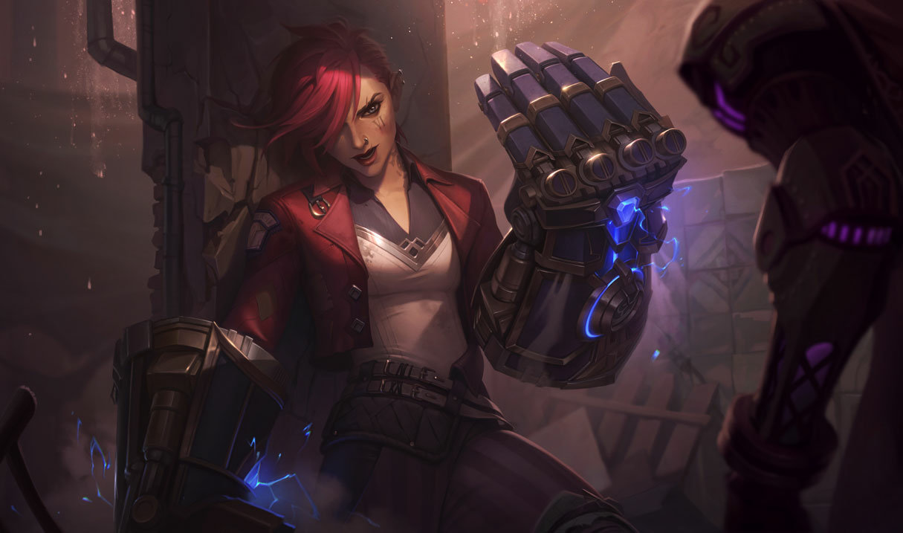

Vi
Người thực thi Piltover
Vi nhớ rất ít về thời thơ ấu của mình ở Zaun, và những gì cô ấy nhớ, cô ấy ước gì mình không nhớ. Chạy đua với các băng đảng bắn tỉa, cô nhanh chóng học cách sử dụng trí thông minh cũng như nắm đấm của mình để tồn tại. Tất cả những ai gặp Vi đều biết cô ấy có thể nói chuyện - hoặc đấm - cách thoát khỏi rắc rối. Thường xuyên hơn không, cô ấy chọn cái sau.
Không ai trong số những người già từ thời trẻ của cô có thể nói cho cô biết bất cứ điều gì về cha mẹ cô. Hầu hết đều cho rằng họ đã chết vì một trong những tai nạn công nghiệp, đáng buồn thay, tất cả đều quá phổ biến ở các thành phố. Mặc dù cuối cùng cô ấy đã ở trong trại trẻ mồ côi của Ngôi nhà Hy vọng đổ nát, một người thợ vét bể phốt nổi tiếng điên cuồng tuyên bố rằng đã tìm thấy cô ấy lơ lửng trong một chiếc nôi đủ lớn cho hai người trong đống đổ nát của một phòng thí nghiệm hóa học đã bị sập. Cuối cùng, Vi nhận ra một số điều tốt nhất là không nên biết.
Với mái tóc hồng hoang, cô trở thành một cảnh tượng đặc biệt trên các đường phố của Zaun — chạy theo những người chủ cửa hàng giận dữ ở các khu chợ ranh giới, đi bộ qua các khu chợ đầy màu sắc của Làn đường đen, hoặc leo lên xe Piltover trên băng tải thủy lực. Bất cứ nơi nào có nguy cơ bị truy cập hoặc lừa đảo để chạy, Vi đều ở trong đó, mặc dù cô ấy không bao giờ ăn cắp của những người không thể bù đắp sự mất mát… và không bao giờ làm tổn thương những người không đáng bị như vậy.
Khi cô lớn hơn, nụ hôn của thời thơ ấu trở nên táo bạo và táo bạo hơn, và Vi đã thành lập một băng nhóm của riêng mình. Xấu hổ và nhanh tức giận, cô ấy vẫn dựa vào nắm đấm của mình hơi nhiều, và hiếm khi không có mắt đen hay môi chẻ.
Cô đã tìm thấy một người cố vấn trong chủ một quán bar ở rìa của Làn đường, người đã làm dịu đi một số khuynh hướng tự hủy hoại bản thân của cô. Anh đã cố gắng củng cố quy tắc đạo đức của cô, và chỉ cho cô cách chiến đấu với kỷ luật, cũng như dạy cô những cách để điều chỉnh cơn giận dữ đang âm ỉ của cô tốt hơn.
Theo thời gian, Vi được biết đến là một người hoàn thành công việc, không cần thắc mắc.
Lắng nghe những lời tán gẫu của những người thợ mỏ Zaunite thường xuyên lui tới quán bar, cô đến để tìm hiểu khi nào các giao dịch lớn được thực hiện và cách thức giao các khoản thanh toán. Đối với một nam tước chem chép, đây là một sự thay đổi đáng kinh ngạc - nhưng đối với cô ấy và những người bạn của cô ấy, đó sẽ là một vận may. Cô đã lên kế hoạch cho một vụ trộm, nhưng biết rằng nó sẽ cần nhiều cơ thể hơn để thực hiện, vì vậy Vi miễn cưỡng đưa một băng nhóm đối thủ, Factorywood Fiends, tham gia vào điểm số của cô.
Mọi thứ vẫn diễn ra tốt đẹp, cho đến khi thủ lĩnh của Fiends giết chủ mỏ bằng một cặp găng tay nghiền bột quá khổ, và nhốt những công nhân còn lại trong đường hầm. Ngay cả khi cả hai băng nhóm bỏ chạy với chiến lợi phẩm, Vi biết cô không thể để mặc những người vô tội này phải chết. Cô giật lấy chiếc găng tay, cơ cấu cổ tay kẹp chặt cánh tay cô một cách đau đớn, nhưng cô đã chịu đựng cơn đau đớn đủ lâu để phá vỡ một con đường giải thoát cho những người thợ mỏ.
Ngày hôm sau, Vi đến thăm Factorywood Fiends. Vẫn đeo găng tay trợ lực, cô ấy đã chiến đấu với toàn bộ băng đảng, thực hiện một cuộc đánh đập huyền thoại đến nỗi nó vẫn được nói đến trong các Làn đường cho đến ngày nay.
Cuối cùng Vi đã biến mất khỏi Zaun trong thời gian có nhiều biến động, khi căng thẳng với Piltover đang lên cao. Tin đồn lan truyền giữa các băng đảng rằng cô ấy đã bị giết trong một vụ nổ lớn ở trung tâm của thành phố, hoặc rằng cô ấy đã quay lưng lại với bạn bè của mình và tấn công những vùng đất xa xôi. Tuy nhiên, sự thật cuối cùng cũng được đưa ra ánh sáng khi Old Hungry's Scars - một băng nhóm độc ác với số lượng sát nhân lan tràn khắp nơi - bị hạ gục bởi một cảnh sát trưởng đáng kính của Piltover và đồng minh mới của cô ấy… Vi.
Thủ lĩnh băng đảng cũ hiện đang làm việc cho Wardens, và cô ta đã thay thế găng tay của máy nghiền bột chạy bằng hóa chất bằng một cặp nguyên mẫu Atlas hextech hoàn toàn mới.
Vẫn chưa ai biết chính xác lý do tại sao hoặc bằng cách nào Vi đến làm việc cùng với Caitlyn - nhưng với bản chất vô chính phủ của làn sóng tội phạm hiện đang càn quét Piltover, nhiều người đồn đoán rằng nó có thể liên quan đến một tỷ phú tóc xanh nhất định từ Zaun…